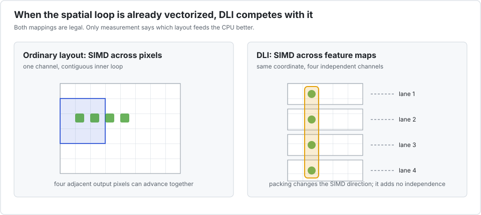

Depthwise 3×3 convolution
Depthwise convolution applies one spatial filter per channel. Different output pixels are independent once the input is fixed, so the ordinary contiguous inner loop is already an excellent SIMD target.

This benchmark is intentionally adversarial to Interleave. The left side of the animation is what LLVM sees in the reference: adjacent output pixels can advance together. DLI chooses the same coordinate in several channels instead. That mapping is legal, but it replaces an already successful SIMD direction rather than unlocking a blocked one.
The benchmark
bench/depthwise.jl applies one 3×3 Float32 stencil to 512 independent 64×64 feature maps. The estimate is nine multiplies and eight additions for every interior pixel.
| configuration | time | estimated GFlop/s | speedup vs scalar | LLVM SIMD |
|---|---|---|---|---|
| scalar reference | 0.81 ms | 41.1 | 1.00× | compiler-controlled |
P=1 | 0.79 ms | 42.5 | 1.03× | compiler-controlled |
P=2 | 4.75 ms | 7.0 | 0.17× | yes, across channels |
P=4 | 3.02 ms | 11.1 | 0.27× | yes, across channels |
P=8 | 2.49 ms | 13.4 | 0.33× | yes, across channels |
P=16 | 1.94 ms | 17.2 | 0.42× | yes, across channels |
P=32 | 1.61 ms | 20.8 | 0.51× | yes, across channels |
The presence of vector instructions at P>1 is not evidence of a good transformation. Even P=32, the least slow packed case, takes about twice the reference time. P=1 is deliberately the scalar type Float32, not Vec{1,Float32}, so LLVM recovers its normal spatial strategy and performance returns to parity.
With explicit task parallelism
| configuration | time | estimated GFlop/s | speedup vs scalar | speedup vs threaded P=1 |
|---|---|---|---|---|
P=1, 10 threads | 0.39 ms | 85.7 | 2.08× | 1.00× |
P=2, 10 threads | 1.02 ms | 32.9 | 0.80× | 0.38× |
P=4, 10 threads | 0.69 ms | 48.2 | 1.17× | 0.56× |
P=8, 10 threads | 0.56 ms | 60.2 | 1.46× | 0.70× |
P=16, 10 threads | 0.50 ms | 66.6 | 1.62× | 0.78× |
P=32, 10 threads | 0.40 ms | 83.7 | 2.04× | 0.98× |
Threading helps because channels are independent, but the best result keeps P=1. Comparing only P=32 threaded with the serial reference would misleadingly attribute a 2.04× result to DLI; compared with threaded P=1, the packed layout is still slightly slower.
Competing approaches
- Plain Julia and LLVM are already the relevant competitor.
@simdmay help only when its independence promise is valid and aliasing is understood; it should never be added by habit. LoopVectorization.@turbomodels and reorders independent loop nests.Tullio.jlcan express convolutions and stencils in index notation and can combine loop transformation, tiling, and threading. Both attack the spatial loop—the right axis for this workload.NNlib.depthwiseconvis the production-oriented choice in a neural-network pipeline. NNlib also has CUDA and AMDGPU extensions and ChainRules support.- Hand-written explicit SIMD offers control but is unnecessary unless inspection proves that the compiler missed the regular spatial loop.
The lesson is a feature, not an embarrassment: one kernel can remain in the Interleave workflow while P=1 opts out of DLI. This control case prevents the project from claiming speedups against an artificially scalar reference.